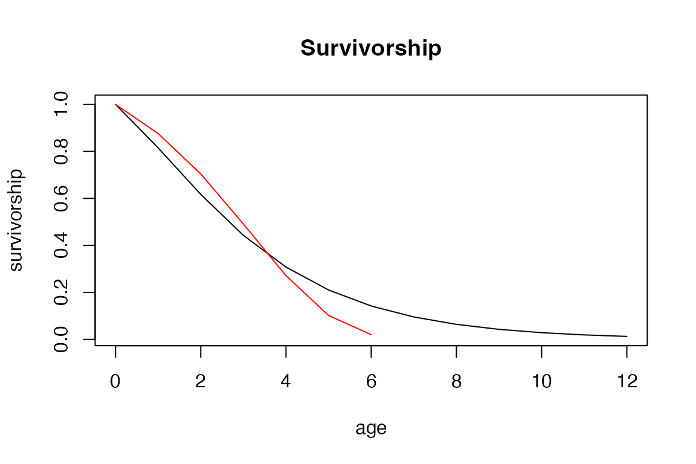
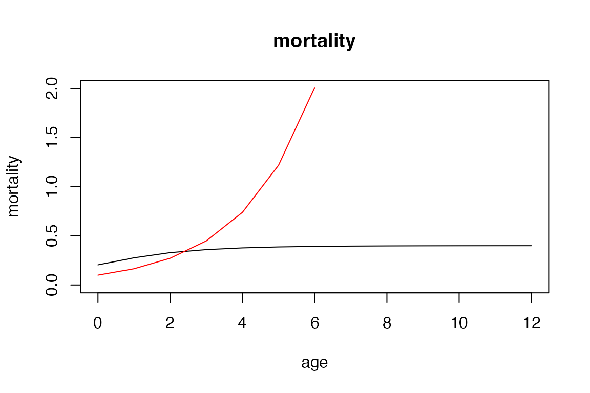

The robustness of age from stage methods
Owen Jones
2024-06-25
Source:vignettes/age_from_stage.Rmd
age_from_stage.RmdIntroduction
Stage-classified matrix population models (Lefkovitch models), are valuable tools for studying population dynamics, especially in cases where organism demography is dependent on ontogenetic stage and populations where age determination is difficult. While analysis of these models is often adequate, there are situations where age-related information is desired, such as with a Leslie matrix or life table. Cochran and Ellner (1992) developed methods to obtain age-related life history traits by breaking down the transition matrix into birth, survival, and fission matrices. These methods allow for the calculation of the discrete survivorship and maternity functions. From these two fundamental trajectories, various life history metrics can be calculated including mean age at maturity, generation time, age-specific reproductive value, and senescence measures.
But how well do these methods really perform? For example, do they perform equally well for all functional forms of mortality? Can they capture differences in senescence rate?
The following vignette illustrates how mpmsim can be
used to address one of these questions.
Age-from-stage
First we load the required packages.
Next we will use the model_survival() function create a
list of age-specific survival trajectories based on a
Gompertz mortality function with senescence rates
(b_1_values) varying between 0.1 and 0.9. These values are
the basis for our life tables.
b_1_values <- seq(0.1, 0.9, 0.1)
lifeTables <- list()
for (i in seq_along(b_1_values)) {
lifeTables[[i]] <- model_survival(
params = c(b_0 = 0.1, b_1 = b_1_values[i]),
model = "Gompertz"
)
}For this analysis we want to convert these age-based trajectories into stage-based matrix models. To do that we will divide the yearly age entries into stages. We do this in an arbitrary way by dividing the age vector into 3 parts: a quarter for juveniles, a half for adult, and another quarter for old individuals.
for (i in seq_along(lifeTables)) {
lifeTables[[i]] <- lifeTables[[i]] |>
mutate(stage = case_when(
x <= round(max(x) * 0.25) ~ 1,
x <= round(max(x) * 0.75) ~ 2,
TRUE ~ 3
))
}Next we’ll add fertility to those life tables.
for (i in seq_along(lifeTables)) {
lifeTables[[i]] <- lifeTables[[i]] |>
mutate(fert = model_fertility(
age = x, params = c(A = 3),
maturity = min(x[stage == 2]),
model = "step"
))
}Let’s take a look at one of these life tables so that the data
preparation so far is clear. The most important columns here are age
(x), survival (px), fertility
(fert) and stage (see
?mpm_to_table for an explanation of the columns in the life
table).
lifeTables[[5]]
#> x hx lx qx px stage fert
#> 1 0 0.1000000 1.00000000 0.1240411 0.87595894 1 0
#> 2 1 0.1648721 0.87595894 0.1961561 0.80384392 1 0
#> 3 2 0.2718282 0.70413427 0.3023227 0.69767734 1 0
#> 4 3 0.4481689 0.49125852 0.4476301 0.55236995 2 3
#> 5 4 0.7389056 0.27135645 0.6241546 0.37584536 2 3
#> 6 5 1.2182494 0.10198806 0.8007912 0.19920884 3 3
#> 7 6 2.0085537 0.02031692 0.9300552 0.06994476 3 3The next step is to turn these life tables into matching pairs of (1) Leslie matrices and (2) stage-based matrices.
Leslie matrices
First Now we can turn these life tables containing age-specific
survival and fertility trajectories into Leslie matrices using the
make_leslie_mpm function. These matrix models can be large
or small depending on the maximum life span of the population: the life
tables are, by default, constrained to extend to the age where the
survivorship function falls below 0.01.
leslie_matrices <- list()
for (i in seq_along(lifeTables)) {
leslie_matrices[[i]] <- make_leslie_mpm(
survival = lifeTables[[i]]$px,
fertility = lifeTables[[i]]$fert,
n_stages = nrow(lifeTables[[i]]), split = TRUE
)
}Let’s examine the Leslie matrix that matches the life table from the previous section.
leslie_matrices[[5]]$mat_A
#> [,1] [,2] [,3] [,4] [,5] [,6] [,7]
#> [1,] 0.0000000 0.0000000 0.0000000 3.0000000 3.0000000 3.0000000 3.00000000
#> [2,] 0.8759589 0.0000000 0.0000000 0.0000000 0.0000000 0.0000000 0.00000000
#> [3,] 0.0000000 0.8038439 0.0000000 0.0000000 0.0000000 0.0000000 0.00000000
#> [4,] 0.0000000 0.0000000 0.6976773 0.0000000 0.0000000 0.0000000 0.00000000
#> [5,] 0.0000000 0.0000000 0.0000000 0.5523699 0.0000000 0.0000000 0.00000000
#> [6,] 0.0000000 0.0000000 0.0000000 0.0000000 0.3758454 0.0000000 0.00000000
#> [7,] 0.0000000 0.0000000 0.0000000 0.0000000 0.0000000 0.1992088 0.06994476Lefkovitch matrices
From these Leslie matrices we can now construct the stage-structured
matrix models (Lefkovitch models) using the mpm_collapse()
function from Rage.
collapsed_matrices <- list()
for (i in seq_along(lifeTables)) {
stages <- lifeTables[[i]]$stage
matrices <- leslie_matrices[[i]]
collapse_list <- split(stages, stages)
# get the indices of each element in the original vector
collapse_list <- lapply(collapse_list, function(x) which(stages %in% x))
collapsed_matrices[[i]] <- Rage::mpm_collapse(
matU = matrices$mat_U,
matF = matrices$mat_F, collapse = collapse_list
)
}Let’s examine the Lefkovitch matrix that matches the Leslie matrix and life table from the previous sections:
collapsed_matrices[[5]]$matA
#> 1 2 3
#> 1 0.6670591 3.0000000 3.000000
#> 2 0.1476356 0.3821296 0.000000
#> 3 0.0000000 0.1158355 0.180401Recovering age-specific trajectories from the stage-based model
Next we can use age-from stage-approximation to see how well we can recover the “true” values in the original Leslie matrix/life table. In the plot, the red curve represents the “true” values of survivorship from the life table and the black curve represents the estimation of survivorship using age-from-stage approximation.
recovered_life_tables <- list()
for (i in seq_along(lifeTables)) {
m1 <- collapsed_matrices[[i]]
recovered_life_tables[[i]] <- Rage::mpm_to_table(
matU = m1$matU, matF = m1$matF,
remove_final = TRUE
)
}
i <- 5
recovered_lt <- recovered_life_tables[[i]]
plot(0:(length(recovered_lt$lx) - 1),
recovered_lt$lx,
type = "l",
xlab = "age", ylab = "survivorship", main = "Survivorship"
)
lines(lifeTables[[i]]$x, lifeTables[[i]]$lx, type = "l", col = "red")
Mortality and longevity
We could also look at other life table trajectories such as mortality (hazard).
plot(0:(length(recovered_lt$lx) - 1),
recovered_lt$hx,
type = "l",
xlab = "age", ylab = "mortality", main = "mortality", ylim = c(0, 2)
)
lines(lifeTables[[i]]$x, lifeTables[[i]]$hx, type = "l", col = "red")
This plot clearly shows that mortality (hazard) is underestimated across most of the life course and that the trajectory is markedly different from the underlying Gompertz trajectory. This is caused by the known issue of the population structure reaching its stationary state: When the population reaches this state, the rate of change in the mortality/survival trajectory will asymptote to zero.
We can now examine how the over-estimation of life span using age-from-stage methods is related to the Gompertz parameter like this.
df1 <- data.frame(b_1_values, lifespan_lt = NA, lifespan_afs = NA)
for (i in seq_along(lifeTables)) {
df1$lifespan_lt[i] <- max(lifeTables[[i]]$x)
df1$lifespan_afs[i] <- max(recovered_life_tables[[i]]$x)
}
df1 <- df1 %>%
mutate(lifespan_diff = lifespan_afs - lifespan_lt) %>%
mutate(lifespan_diff_perc = 100 * (lifespan_diff / lifespan_lt))
plot(df1$b_1_values, df1$lifespan_diff_perc,
type = "b",
ylab = "Lifespan overestimation (%)", xlab = "Gompertz parameter"
)Further questions?
As explained elsewhere, this issue can be ameliorated by examining
the convergence to the quasi-stationary state (QSD) (see
?Rage::qsd_converge()) and it affects both
mortality/survival and fertility. One could use the methods outlined
here to explore these issues more thoroughly by (for example) checking
how age-from-stage methods perform with different life histories and
different functional forms of mortality (see
?mpmsim::model_survival()) and fertility.
(?mpmsim::model_fertility()).